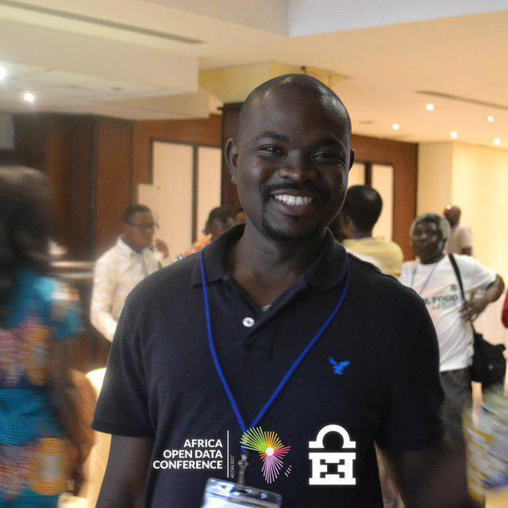

|
: le 31 décembre 1989 à Tcharè-Baou : Tcharè-Baou (Blitta) : Togolaise : +228 90 27 59 64 : hermann.kass@gmail.com : célibataire : oui : 04 B.P. 787 Lomé-Togo : @hermannkass https://github.com/hermann106 https://gitlab.com/hermann.kass |
 |